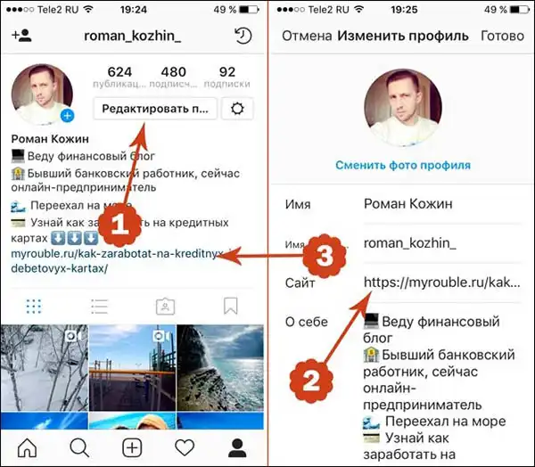

Размещать у себя в профиле партнерские ссылки или скидочные промо-коды выгодная идея.
Пример: Блогер прочитал интересную книжку и решил поделиться этим со своими подписчиками. Он сделал отдельный пост, где приложил фото книги, а под ней в описании изложил свои впечатления о книге. В конце поста он поместил партнерскую ссылку на книжный интернет-магазин и получает 7% с каждой покупки. При закупке на 100 000 рублей с этого сайта, он, очевидно, получит 7 тыс. рублей.
Этот способ скорее выступает в роли дополнительного источника дохода. Партнерские программы должны внедряться под Целевую Аудиторию. Вычислить ЦА возможно с помощью статистических данных, после переключения аккаунта на бизнес-профиль.
Чтобы добавить ссылку с партнерской программой, необходимо произвести несколько действий:
Зайти в настройки профиля с помощью кнопки «Редактировать». Далее вставьте ссылку в поле Сайт. На третьем шаге виден результат:
Обратите внимание, в описании под фото, а также в комментариях к посту вы можете указывать ссылки, но они будут неактивными, это значит, человек не сможет кликнуть по ним и перейти в партнерский магазин. Фолловеру остается только копировать ссылку из текста и вносить вручную в браузер, что делают немногие. Поэтому, чтобы повысить кликабельность, блогеры размещают партнерские ссылки в описании своего аккаунта перед размещением публикации, а затем, в конце заметки, упоминают о том, что ссылка на заказ книги находится в профиле. Только в профиле можно оставить кликабельную ссылку.
Теперь рассмотрим самые популярные биржи партнерских программ:
- Epicstars – самая популярная и надежная биржа рекламных сетей. Основной минус — это высокие комиссии на сделки с рекламодателями. Биржа взимает до 30% от успешной операции.
- Adstamer – главный конкурент Epicstars. Биржа успешно работает уже 3 года и отличается тем, что имеет автоматический постинг рекламы. Также платформа берет фиксированную комиссию – 10% с каждой сделки.
- Plibber – рекламная площадка, которая позволяет зарабатывать на размещении рекламных публикаций в Instagram, ВКонтакте, Одноклассники, Facebook. С агента взимается комиссия 15%. Вывод средств осуществляется только с помощью платежной системы WebMoney.